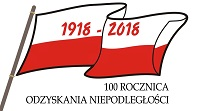

100 rocznica odzyskania niepodległości

Obchody 100-lecia odzyskania niepodległości przez Polskę zaplanowane na 2018 i związane z jubileuszem stu lat od odzyskania niepodległości przez Rzeczpospolitą Polską 11 listopada 1918.
Podczas obchodów Narodowego Święta Niepodległości 11 listopada 2016 prezydent RP Andrzej Duda zaapelował o wspólne przygotowanie i świętowanie obchodów 100-lecia odzyskania niepodległości przez Polskę w 2018. Pełnomocnikiem prezydenta RP do spraw narodowych obchodów setnej rocznicy odzyskania niepodległości Rzeczypospolitej Polskiej został minister Wojciech Kolarski.
Uchwałą z 25 maja 2017 Sejm RP VIII kadencji zdecydował o ustanowieniu roku 2018 Rokiem Jubileuszu 100-lecia odzyskania przez Polskę Niepodległości. Uchwałą z 7 grudnia 2017 Senat RP IX kadencji zdecydował o ustanowieniu roku 2018 Rokiem Niepodległości Polski.
W związku z 100. rocznicą odzyskania niepodległości 28 lipca 2017 minister spraw wewnętrznych Mariusz Błaszczak zainicjował akcję pod nazwą „Zaprojektuj z nami Polski Paszport 2018”.
W 2017 podjął działalność Komitet Narodowych Obchodów Setnej Rocznicy Odzyskania Niepodległości Rzeczypospolitej Polskiej.
Na wniosek prezydenta RP zwołano Zgromadzenie Narodowe na 5 grudnia 2017 z okazji 150. rocznicy urodzin marszałka Józefa Piłsudskiego, co stanowiło inaugurację obchodów 100-lecia odzyskania niepodległości przez Polskę. W orędziu wygłoszonym przed obiema izbami parlamentu tego dnia prezydent zainaugurował obchody jubileuszu stulecia odzyskania przez Polskę niepodległości.